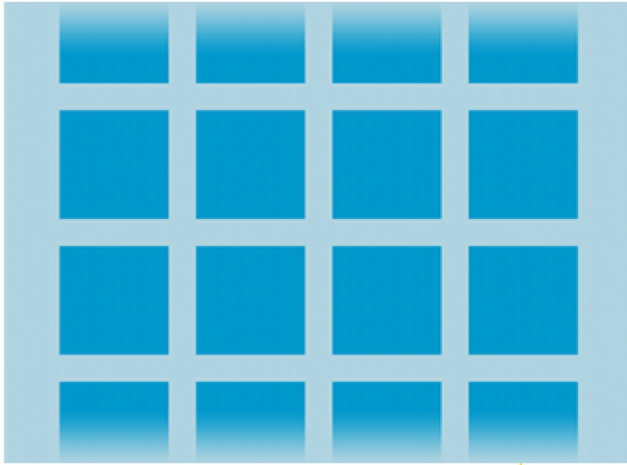
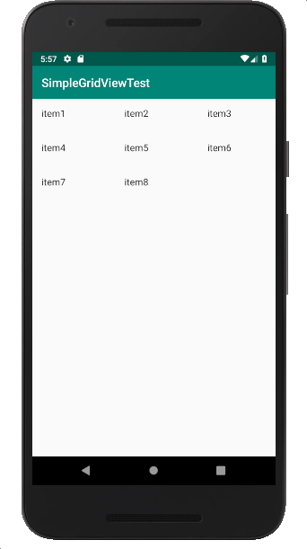
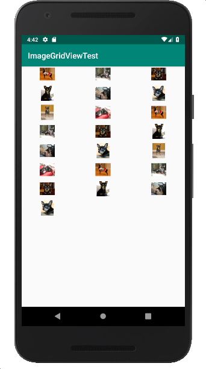

GridView는 2차원 스크롤가능한 그리드에 항목을 표시

res/layout/activity_main.xml
<?xml version="1.0" encoding="utf-8"?>
<GridView xmlns:android="http://schemas.android.com/apk/res/android"
android:id="@+id/gridview"
android:layout_width="match_parent"
android:layout_height="match_parent"
android:columnWidth="100dp"
android:numColumns="auto_fit"
android:verticalSpacing="10dp"
android:horizontalSpacing="10dp"
android:stretchMode="columnWidth"
android:gravity="center"
/>100dp: 그리드 항목 하나의 폭을 100dp로 설정
auto_fit: 열의 폭과 화면 폭을 바탕으로 자동 계산
columnWidth: 열 내부의 여백을 폭에 맞게 채움
public class MainActivity extends AppCompatActivity {
@Override
protected void onCreate(Bundle savedInstanceState) {
super.onCreate(savedInstanceState);
setContentView(R.layout.activity_main);
// 데이터 원본 준비
String[] items = {"item1", "item2", "item3", "item4", "item5", "item6", "item7", "item8"};
//어댑터 준비 (배열 객체 이용, simple_list_item_1 리소스 사용
ArrayAdapter<String> adapt
= new ArrayAdapter<String>(
this,
android.R.layout.simple_list_item_1,
items);
// id를 바탕으로 화면 레이아웃에 정의된 GridView 객체 로딩
GridView gridview = (GridView) findViewById(R.id.gridview);
// 어댑터를 GridView 객체에 연결
gridview.setAdapter(adapt);
}
}생성된 ArrayAdapter 객체를 GridView 객체에 연결
실행화면

SimpleGridViewTest 프로젝트 Github URL : https://github.com/kwanulee/AndroidProgramming/tree/master/examples/SimpleGridViewTest
activity_main.xml
<?xml version="1.0" encoding="utf-8"?>
<GridView xmlns:android="http://schemas.android.com/apk/res/android"
android:id="@+id/gridview"
android:layout_width="match_parent"
android:layout_height="match_parent"
android:columnWidth="100dp"
android:numColumns="auto_fit"
android:verticalSpacing="10dp"
android:horizontalSpacing="10dp"
android:stretchMode="columnWidth"
android:gravity="center"
/>그리드뷰의 항목으로 간단한 텍스트가 아닌 이미지를 사용하고자 하는 경우에는 그리드뷰의 항목으로 이미지를 공급하는 ImageAdapter를 BaseAdapter로부터 파생하여 정의한다.
public class ImageAdapter extends BaseAdapter {
private Context mContext;
public ImageAdapter(Context c) {
mContext = c;
}
public int getCount() {
return mThumbIds.length;
}
public Object getItem(int position) {
return mThumbIds[position];
}
public long getItemId(int position) {
return position;
}
// create a new ImageView for each item referenced by the Adapter
public View getView(int position, View convertView, ViewGroup parent) {
ImageView imageView;
if (convertView == null) {
// if it's not recycled, initialize some attributes
imageView = new ImageView(mContext);
imageView.setLayoutParams(new GridView.LayoutParams(100, 100));
imageView.setScaleType(ImageView.ScaleType.CENTER_CROP);
imageView.setPadding(8, 8, 8, 8);
} else {
imageView = (ImageView) convertView;
}
imageView.setImageResource(mThumbIds[position]);
return imageView;
}
// references to our images
private Integer[] mThumbIds = {
R.drawable.sample_2, R.drawable.sample_3,
R.drawable.sample_4, R.drawable.sample_5,
R.drawable.sample_6, R.drawable.sample_7,
R.drawable.sample_0, R.drawable.sample_1,
R.drawable.sample_2, R.drawable.sample_3,
R.drawable.sample_4, R.drawable.sample_5,
R.drawable.sample_6, R.drawable.sample_7,
R.drawable.sample_0, R.drawable.sample_1,
R.drawable.sample_2, R.drawable.sample_3,
R.drawable.sample_4, R.drawable.sample_5,
R.drawable.sample_6, R.drawable.sample_7
};
}그리드뷰 설정의 마지막 단계는 ImageAdapter 객체를 생성하고 이를 GridView 객체에 연결하는 것
public class MainActivity extends AppCompatActivity {
protected void onCreate(Bundle savedInstanceState) {
super.onCreate(savedInstanceState);
setContentView(R.layout.activity_main);
// id를 바탕으로 화면 레이아웃에 정의된 GridView 객체 로딩
GridView gridview = (GridView) findViewById(R.id.gridview);
// ImageAdapter 객체를 생성하고 GridView 객체에 연결
gridview.setAdapter(new ImageAdapter(this));
}
}AdapterView의 항목이 클릭될 때, 호출되는 callback method의 인터페이스
public static interface AdapterView.OnItemClickListener {
abstract void onItemClick(AdapterView<?> parent,
View view,
int position,
long id);
}| 파라미터 | 설명 |
|---|---|
| parent | 클릭 이벤트가 발생된 AdapterView |
| view | 실제 클릭 된 AdapterView안의 View |
| position | 어댑터 내에서 클릭 된 항목/뷰의 위치 |
| id | 클릭 된 항목의 id |
앞의 ImageGridViewTest 프로젝트 예제에서 항목 클릭 이벤트 처리 코드 추가
public class MainActivity extends AppCompatActivity {
protected void onCreate(Bundle savedInstanceState) {
super.onCreate(savedInstanceState);
setContentView(R.layout.activity_main);
// id를 바탕으로 화면 레이아웃에 정의된 GridView 객체 로딩
GridView gridview = (GridView) findViewById(R.id.gridview);
// ImageAdapter 객체를 생성하고 GridView 객체에 연결
gridview.setAdapter(new ImageAdapter(this));
// 항목 클릭 이벤트 처리
gridview.setOnItemClickListener(new AdapterView.OnItemClickListener() {
public void onItemClick(AdapterView<?> parent, View v,
int position, long id) {
Toast.makeText(MainActivity.this,
"" + (position+1)+ "번째 선택",
Toast.LENGTH_SHORT).show();
}
});
}
}실행화면

ImageGridViewTest 프로젝트 Github URL : https://github.com/kwanulee/AndroidProgramming/tree/master/examples/ImageGridViewTest